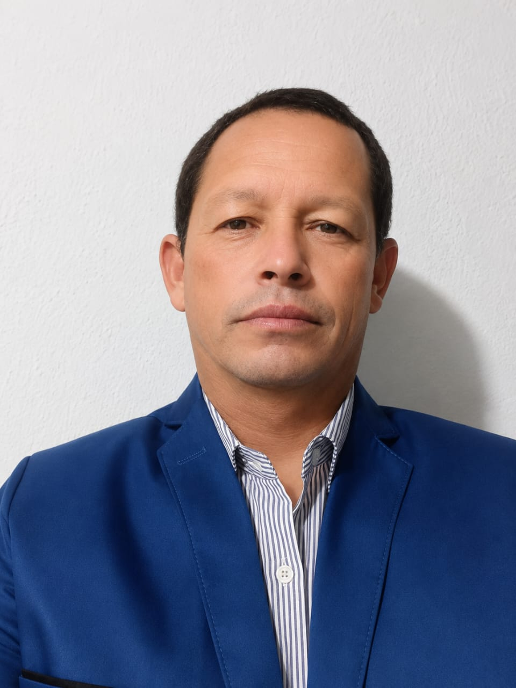

Igreja Evangélica Assembleia de Deus — Renovação Nova Fé
A Igreja Evangélica Assembleia de Deus — Renovação Nova Fé tem como missão principal levar a palavra de Deus a todos os corações, promovendo a transformação de vidas através do amor de Cristo. Sob a liderança do Pastor Haroldo Lopes Morais, nossa congregação se dedica ao crescimento espiritual e ao fortalecimento da fé de cada membro.
Nossa igreja busca ser um refúgio de esperança e renovação para toda a comunidade de Porto Belo e região. Através de cultos edificantes, estudos bíblicos aprofundados e ações sociais, trabalhamos para construir um ambiente acolhedor onde todos possam encontrar o caminho da salvação e viver uma vida plena em Cristo.
Com valores fundamentados na Palavra de Deus, promovemos a união familiar, o desenvolvimento espiritual e o crescimento pessoal de cada irmão. Nossa visão é ser uma igreja que impacta positivamente a sociedade, levando luz e esperança a todos que necessitam do amor transformador de Jesus Cristo.
Nome Completo: Haroldo Lopes Morais
Cargo: Pastor Presidente
Data de Nascimento: 30 de setembro de 1975
Naturalidade: Cananeia, São Paulo
Formação: Bacharel em Teologia
Igreja: IEADB - Renovação Nova Fé
Localização: Porto Belo, Santa Catarina
Estado Civil: Casado
Pastor consagrado e dedicado ao ministério da Palavra, com anos de experiência na liderança espiritual e no pastoreio do rebanho de Cristo. Comprometido com a expansão do Reino de Deus e o crescimento espiritual da congregação.
Seja bem-vindo à nossa igreja! Estamos aqui para servir a Deus e à nossa comunidade.
Localização: Porto Belo, Santa Catarina
Igreja: Assembleia de Deus — Renovação Nova Fé
Pastor: Haroldo Lopes Morais